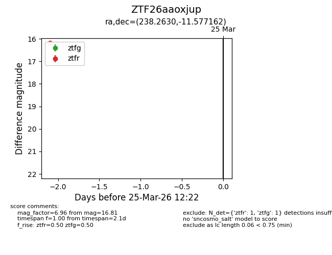
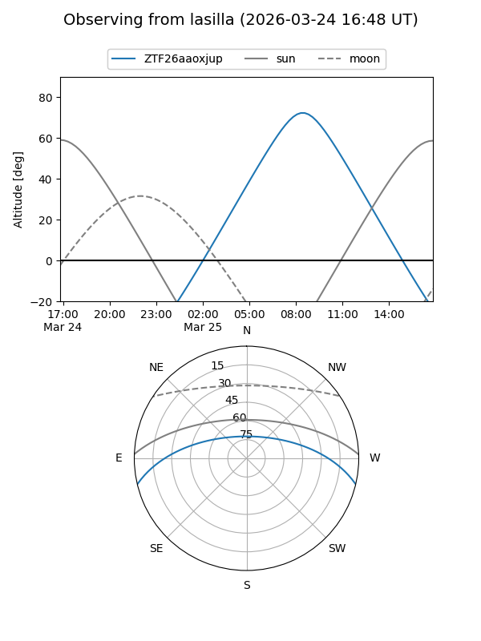
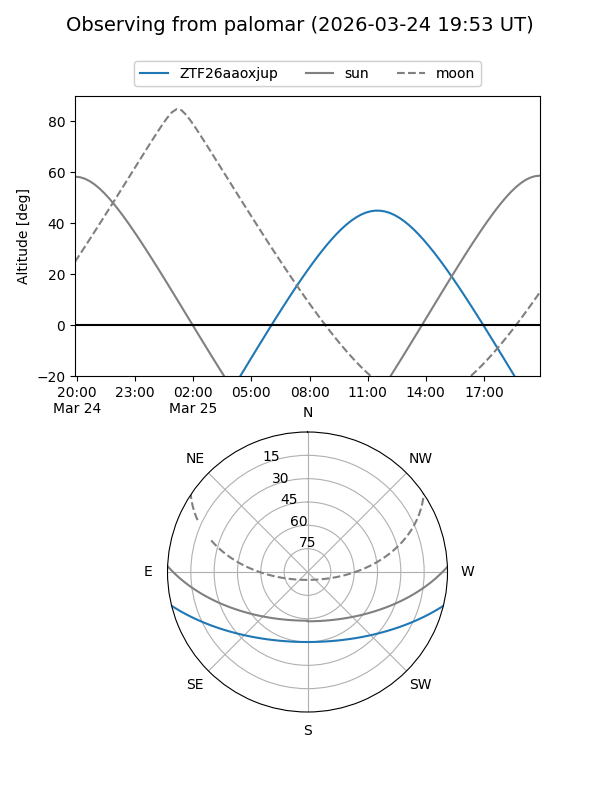

ZTF26aaoxjup
Target ZTF26aaoxjup at 2026-03-25 12:24
Aliases and brokers:
FINK: link
Lasair: link
ALeRCE: link
alt names
ZTF26aaoxjup (ztf,fink_ztf)
Coordinates:
equatorial (ra, dec) = 238.2630,-11.57716
equatorial (HMS+DMS) = 15:53:03.11,-11:34:37.78
galactic (l, b) = (357.7233,+31.37562)
Flags:
Photometry:
last ztfg=16.81, ztfr=16.17
1 ztfg, 1 ztfr detections
Lightcurve

Visibility


Additional plots